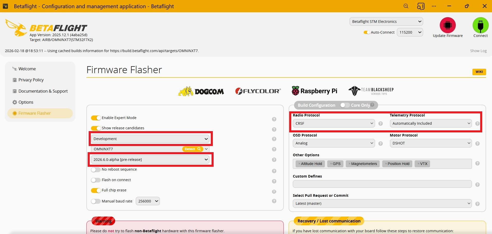
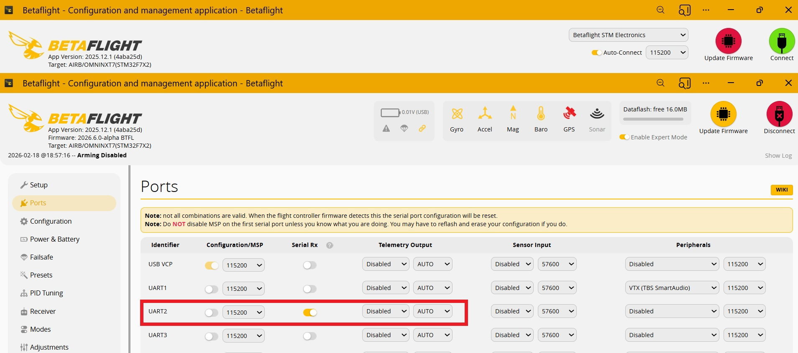
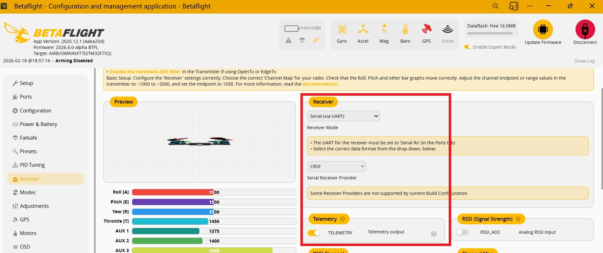

🛠 Прошивка и настройка Betaflight
⚠️ Внимание: В настоящее время только Developed 2026.6.0-alpha (pre-release) версия прошивки Betaflight имеет расширенную (Extended GPS frame) информацию CRSF телеметрии, достаточную для системы идентификации полета БВС.
⚠️CRSF телеметрия текущего 2025.12 релиза Betaflight не пригодна для идентификации!!!
1Запуск Betaflight Configurator
Откройте Online Betaflight Configurator.
Подключите полетный контроллер
Перейдите в раздел Firmware flasher
2 Прошивка Betaflight
Выберите свой полетный контроллер в списке.
Выберите Developed версию firmware.
Укажите необходимые опции.
Оставьте CRSF в качестве Radio Protocol и Telemetry Protocol.
Загрузите firmware (online).
Прошейте firmware.

Рис. 1:Прошивка Beteflight firmware
3 Настройка порта UART
Войдите в конфигуратор после прошивки BF firmware.
Перейдите на закладку Ports.
Для порта ELRS-приемника включите режим Serial-Rx

Рис. 2: Настройка порта
4 Настройка приемника
Перейдите на закладку Receiver.
Установите Receiver mode - Serial, Serial receiver provider - CRSF, включите телеметрию

Рис. 3: Настройка приемника